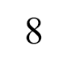

Территориальная программа гос. гарантий оказаний гражданам бесплатной медицинской помощи на 2020
УТВЕРЖДЕНА постановлением Правительства Новосибирской области от 29.12.2022 № 651-п
ТЕРРИТОРИАЛЬНАЯ ПРОГРАММА
государственных гарантий бесплатного оказания гражданам
медицинской помощи в Новосибирской области на 2023 год
и на плановый период 2024 и 2025 годов
1. Условия реализации установленного законодательством Российской Федерации права на выбор врача, в том числе врача общей практики (семейного врача) и лечащего врача (с учетом согласия врача)
В соответствии со статьей 21 Федерального закона от 21.11.2011 № 323-ФЗ «Об основах охраны здоровья граждан в Российской Федерации» для получения медицинской помощи граждане имеют право на выбор врача, в том числе врача общей практики (семейного врача) и лечащего врача (с учетом согласия этого врача), а также на выбор медицинской организации в порядке, утвержденном приказом Министерства здравоохранения и социального развития Российской Федерации от 26.04.2012 № 406н «Об утверждении Порядка выбора гражданином медицинской организации при оказании ему медицинской помощи в рамках программы государственных гарантий бесплатного оказания гражданам медицинской помощи».
2. Порядок реализации установленного законодательством Российской Федерации права внеочередного оказания медицинской помощи отдельным категориям, включая участников специальной военной операции Российской Федерации на территориях Украины, Донецкой Народной Республики и Луганской Народной Республики с 24 февраля 2022 года, в медицинских организациях, находящихся на территории Новосибирской области
Граждане, имеющие право на внеочередное оказание медицинской помощи, при обращении в медицинскую организацию предъявляют документ, подтверждающий их право на внеочередное оказание медицинской помощи. Право на внеочередное оказание медицинской помощи имеют:
Информация о категориях граждан, имеющих право на внеочередное оказание медицинской помощи, размещается медицинскими организациями, находящимися на территории Новосибирской области, на стендах, расположенных в указанных медицинских организациях, и на их официальных сайтах в информационно-телекоммуникационной сети «Интернет»
3. Порядок обеспечения граждан лекарственными препаратами, а также медицинскими изделиями, включенными в утвержденный Правительством Российской Федерации перечень медицинских изделий, имплантируемых в организм человека, лечебным питанием, в том числе специализированными продуктами лечебного питания, по назначению врача, а также донорской кровью и ее компонентами по медицинским показаниям в соответствии со стандартами медицинской помощи с учетом видов, условий и форм оказания медицинской помощи, за исключением лечебного питания, в том числе специализированных продуктов лечебного питания, по желанию пациента
Обеспечение граждан, проживающих на территории Новосибирской области, лекарственными препаратами для медицинского применения, включенными в перечень лекарственных препаратов и медицинских изделий, отпускаемых населению в соответствии с Перечнем групп населения и категорий заболеваний, при амбулаторном лечении которых лекарственные препараты и медицинские изделия отпускаются по рецептам врачей бесплатно, а также в соответствии с Перечнем групп населения, при амбулаторном лечении которых лекарственные препараты отпускаются по рецептам врачей с пятидесятипроцентной скидкой, осуществляется в соответствии с приложением № 1 к Программе.
Обеспечение граждан, включенных в Федеральный регистр лиц, имеющих право на получение государственной социальной помощи и не отказавшихся от получения социальной услуги, лекарственными препаратами для медицинского применения, медицинскими изделиями, а также специализированными продуктами лечебного питания для детей-инвалидов предусмотрено пунктом 1 части 1 и частью 2 статьи 6.2 Федерального закона от 17.07.1999 № 178-ФЗ «О государственной социальной помощи».
осударственной социальной помощи». Обеспечение необходимыми лекарственными препаратами для медицинского применения по рецептам на лекарственные препараты, медицинскими изделиями по рецептам на медицинские изделия, а также специализированными продуктами лечебного питания для детей-инвалидов осуществляется в соответствии с утвержденным распоряжением Правительства Российской Федерации от 12.10.2019 № 2406-р «Об утверждении перечня жизненно необходимых и важнейших лекарственных препаратов, а также перечней лекарственных препаратов для медицинского применения и минимального ассортимента лекарственных препаратов, необходимых для оказания медицинской помощи» перечнем жизненно необходимых и важнейших лекарственных препаратов для медицинского применения.
Финансовое обеспечение указанных мероприятий осуществляется в соответствии с распоряжением Правительства Российской Федерации.
Обеспечение граждан лекарственными препаратами для медицинского применения, включенными в перечень жизненно необходимых и важнейших лекарственных препаратов в соответствии с приложением № 3 к Программе, и медицинскими изделиями, которые предусмотрены стандартами оказания медицинской помощи, осуществляется в рамках Программы при оказании:
Назначение лекарственных препаратов и выписывание рецептов осуществляется по медицинским показаниям лечащим врачом по результатам осмотра и обследования пациента.
Обеспечение лиц лекарственными препаратами при оказании первичной медико-санитарной помощи в амбулаторных условиях осуществляется за счет личных средств граждан, за исключением лиц, имеющих право на бесплатное и льготное обеспечение лекарственными препаратами.
Граждане обеспечиваются медицинскими изделиями, предусмотренными стандартами медицинской помощи.
Государственная социальная помощь отдельным категориям граждан в виде набора социальных услуг в части обеспечения необходимыми лекарственными препаратами предоставляется в соответствии с федеральным законодательством и законодательством Новосибирской области.
Обеспечение граждан донорской кровью и ее компонентами, лечебным питанием, в том числе специализированными продуктами лечебного питания, осуществляется в соответствии с федеральным законодательством и законодательством Новосибирской области.
Больные, беременные, роженицы, родильницы и новорожденные обеспечиваются в стационарных условиях бесплатным лечебным питанием в соответствии с федеральным законодательством Российской Федерации и законодательством Новосибирской области.
4. Перечень мероприятий по профилактике заболеваний и формированию здорового образа жизни, осуществляемых в рамках Программы
В целях профилактики заболеваний и формирования здорового образа жизни осуществляется:
5. Перечень медицинских организаций, участвующих в реализации Программы, в том числе территориальной программы обязательного медицинского страхования, с указанием медицинских организаций, проводящих профилактические медицинские осмотры, в том числе в рамках диспансеризации
Перечень медицинских организаций, участвующих в реализации Программы, в том числе территориальной программы обязательного медицинского страхования, и перечень медицинских организаций, проводящих профилактические медицинские осмотры и диспансеризацию, в том числе углубленную диспансеризацию в 2023 году установлен приложением № 2 к Программе.
6. Условия пребывания в медицинских организациях при оказании медицинской помощи в стационарных условиях, включая предоставление спального места и питания, при совместном нахождении одного из родителей, иного члена семьи или иного законного представителя в медицинской организации в стационарных условиях с ребенком до достижения им возраста 4 лет, а с ребенком старше указанного возраста - при наличии медицинских показаний
Одному из родителей, иному члену семьи или иному законному представителю предоставляется право на бесплатное совместное нахождение с ребенком в медицинской организации при оказании ему медицинской помощи в стационарных условиях в течение всего периода лечения независимо от возраста ребенка. При совместном нахождении в медицинской организации в стационарных условиях с ребенком до достижения им возраста четырех лет, а с ребенком старше данного возраста - при наличии медицинских показаний (в том числе постельный режим, ограничения самообслуживания, индивидуальные особенности лечебнодиагностического процесса) плата за создание условий пребывания в стационарных условиях, в том числе за предоставление спального места и питания, с указанных лиц не взимается.
Госпитализация одного из родителей, иного члена семьи или иного законного представителя по уходу за ребенком старше четырех лет без медицинских показаний допускается при наличии свободных мест на условиях, предусмотренных медицинской организацией.
